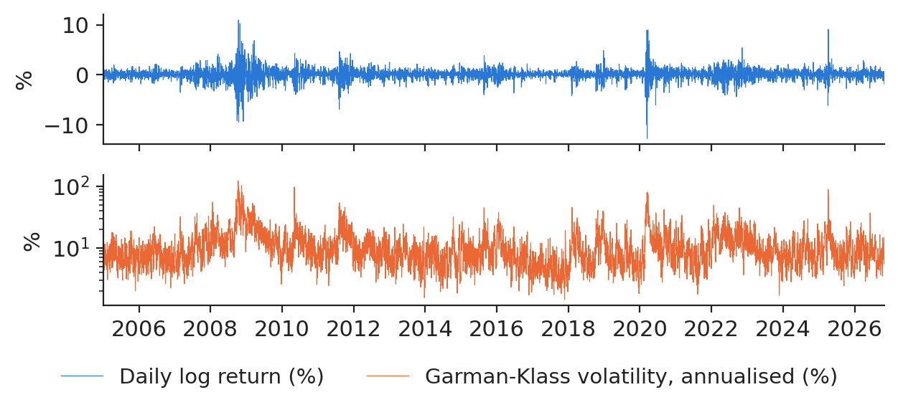
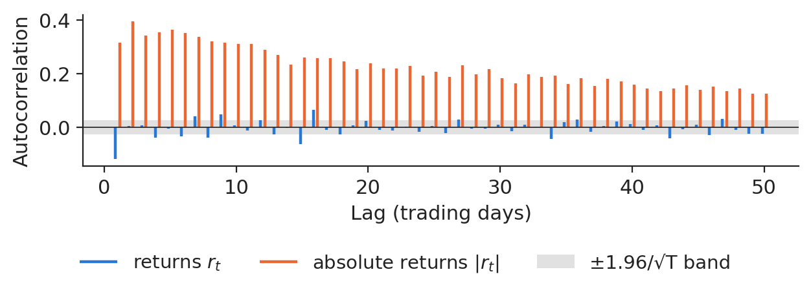
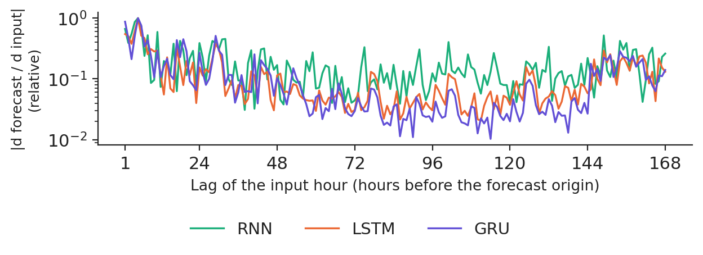
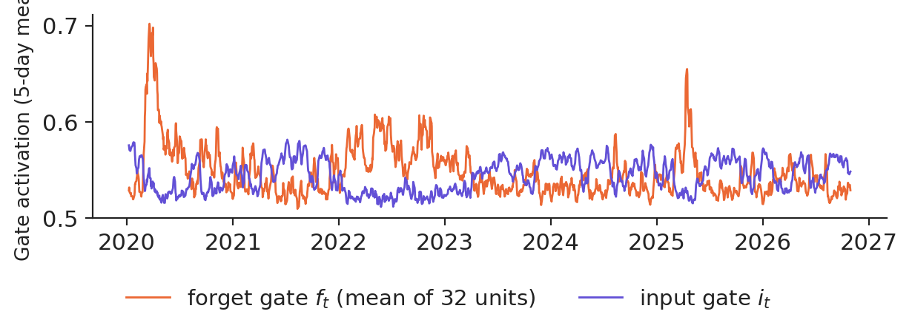
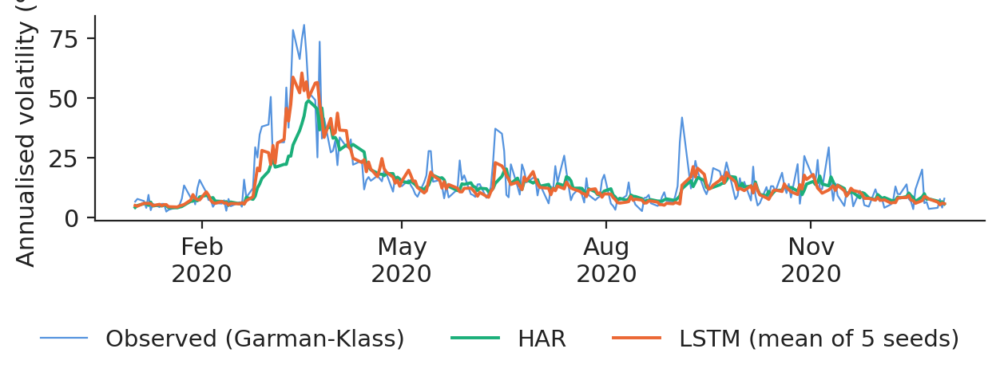
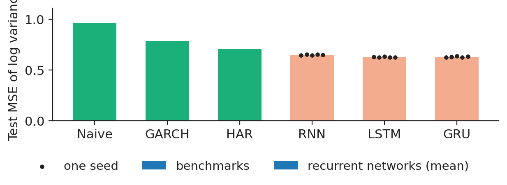
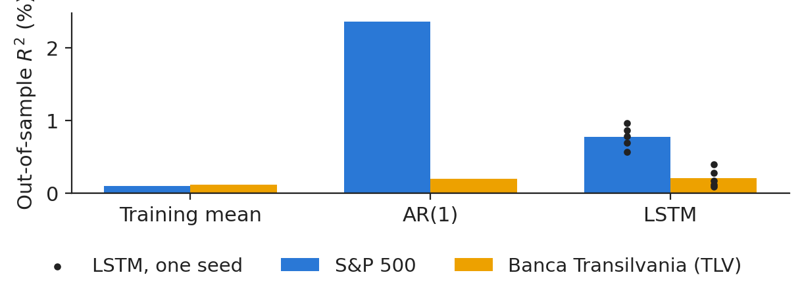
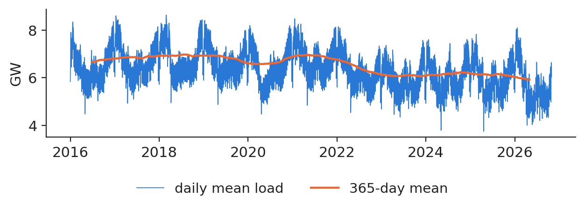
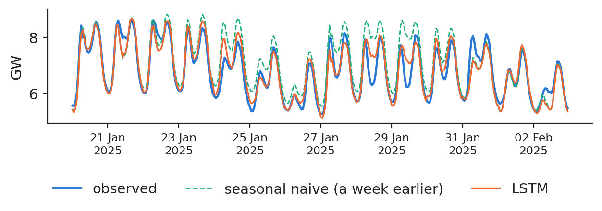

Lecture 5: Recurrent networks: RNN, LSTM and GRU for sequences and financial time series
Lecture 5
Recurrent networks: RNN, LSTM and GRU for sequences and financial time series
Prof. dr. Daniel Traian PELE
Bucharest University of Economic Studies (ASE), Department of Statistics and Econometrics Romanian Academy, Institute for Economic Forecasting (IPE)
Prices, volatility and electricity load arrive as sequences, one observation after another, and what happens tomorrow depends on what happened before. A recurrent neural network (RNN) keeps a hidden state that summarises the past and updates it with the same rule at every step. This lecture writes the RNN, its training by backpropagation through time (BPTT) and the reason its gradients vanish, then the two gated cells that fix it: long short-term memory (LSTM) and the gated recurrent unit (GRU).
The networks are then tested where a risk manager or an energy supplier would use them, always against the benchmarks first: next-day volatility of the S&P 500 against the heterogeneous autoregressive (HAR) model and a GARCH model (generalised autoregressive conditional heteroskedasticity), next-day returns of the S&P 500 and of Banca Transilvania (TLV) against a zero forecast, and the day-ahead hourly load of Romania against a seasonal naive forecast and a linear model. The answers differ by task, and that is the main lesson.
What you will be able to do
Write an RNN as equations, unroll it in time and count its parameters.
Derive BPTT and explain why gradients vanish or explode.
Read the LSTM and GRU cells gate by gate.
Forecast volatility, returns and electricity load with a leakage-free protocol and benchmarks first.
Decide with the Diebold–Mariano test when a recurrent network is worth its cost.
Research from our groupJheng, Tak, Găman, Mazurencu-Marinescu-Pele and Pele (2026) use pre-trained time-series foundation models, without fine-tuning, to forecast VaR and expected shortfall in Central and Eastern European markets, with a conformal calibration step that makes the tail forecasts reliable.
Sequences in finance and energy
Returns look like noise, volatility comes in clusters
The data are the daily open, high, low and close of the S&P 500 from 4 January 2005 to 30 October 2026 (5,491 trading days). The daily variance is measured with the Garman–Klass (GK) range estimator, \(\hat\sigma^2_{GK,t}=\frac12\ln^2(H_t/L_t)-(2\ln2-1)\ln^2(C_t/O_t)\), which uses the high \(H_t\), low \(L_t\), open \(O_t\) and close \(C_t\) of the day. Annualised, its median is 8.77% and its peak 122%, on 10 October 2008.

Daily log returns and annualised Garman–Klass volatility of the S&P 500 (log scale).
Source: Yahoo Finance, daily quotes. Data: 4 Jan 2005 to 30 Oct 2026, trading days.
The memory is in the volatility, not in the returns
The first-order autocorrelation of returns is −0.119, inside the noise band of ±0.026; that of absolute returns is 0.315 and still 0.126 at lag 50. Out of 50 lags, 15 are significant for returns and 50 for absolute returns. A model with memory is therefore worth trying for risk, for example as an input to value-at-risk (VaR), much less for the direction of the price.

Autocorrelation of daily returns and of absolute returns, lags 1 to 50.
Source: Yahoo Finance, daily quotes. Data: 4 Jan 2005 to 30 Oct 2026, trading days.
The recurrent network and backpropagation through time
The vanilla RNN
The state is updated by \(\mathbf h_t=\tanh(\mathbf W_{xh}\mathbf x_t+\mathbf W_{hh}\mathbf h_{t-1}+\mathbf b_h)\) and the forecast is \(\hat y_t=\mathbf W_{hy}\mathbf h_t+b_y\). The same matrices are used at every step, so the number of parameters, \(n_h(d+n_h+1)+n_h+1\), does not depend on the length of the sequence. Our volatility model reads windows of 22 trading days with \(d=3\) inputs (log variance, return, absolute return) and \(n_h=32\) units; only the last output, tomorrow's log variance, enters the loss.
Backpropagation through time and vanishing gradients
Unrolled in time, the RNN is a deep network with tied weights, and the gradient of \(\mathbf W_{hh}\) sums contributions of every step, each multiplied by a product of Jacobians \(\mathbf J_s=\mathrm{diag}(1-\mathbf h_s^2)\mathbf W_{hh}\):
where \(\sigma_{\max}\) is the largest singular value and \(\gamma\le1\) the largest slope of \(\tanh\). When \(\gamma\sigma_{\max}<1\) the signal from far in the past vanishes geometrically; exploding gradients are limited by clipping the gradient norm (we use a maximum norm of 1, chosen a priori).
Gated cells: LSTM and GRU
The LSTM cell
The LSTM keeps a separate cell state \(\mathbf c_t=\mathbf f_t\odot\mathbf c_{t-1}+\mathbf i_t\odot\tilde{\mathbf c}_t\), where the forget gate \(\mathbf f_t\), the input gate \(\mathbf i_t\) and the output gate \(\mathbf o_t\) are logistic functions of \([\mathbf h_{t-1};\mathbf x_t]\), and \(\mathbf h_t=\mathbf o_t\odot\tanh(\mathbf c_t)\). Along the cell state the Jacobian is \(\mathrm{diag}(\mathbf f_t)\): when the forget gate stays near one, gradients travel far back. The GRU does the same with two gates and no separate cell, \(\mathbf h_t=(1-\mathbf z_t)\odot\mathbf h_{t-1}+\mathbf z_t\odot\tilde{\mathbf h}_t\), with three quarters of the parameters of an LSTM.
Measured memory
We measure how far back the trained load networks look: the average absolute gradient of their noon output with respect to each of the 168 input hours. The networks read the week as seven daily profiles, one step per day, which keeps the gradient path short. Relative to the maximum of the last day, the sensitivity at a lag of one week is 0.261 for the RNN, 0.131 for the LSTM and 0.140 for the GRU.

Sensitivity of the trained day-ahead load forecasts to each input hour (log scale), 200 test days.
Source: energy-charts.info (Fraunhofer ISE), from exchange and ENTSO-E data. Data: 200 test days of 2024; models with seed 20261108; forecast for noon (hour 12, universal time).
On the volatility test years the mean forget gate of the trained LSTM is 0.547 and the mean input gate 0.544; their correlations with today's log variance are 0.743 and −0.616. Gates are a diagnostic of when the model changes regime, not an explanation.

Forget-gate and input-gate activations of the volatility LSTM, 5-day means, 2020–2026.
Source: Yahoo Finance, daily quotes. Data: test period 2020-2026, LSTM seed 20261108, last step of each 22-day window.
Every number the model sees must be computable at the forecast origin. The S&P 500 is split in time order: training to 31 December 2016 (3,020 days), validation to 31 December 2019 (754 days) and test from 1 January 2020 (1,717 days). Scaling uses the training years only; early stopping stops when the validation loss has not improved for six epochs. Each network is trained with five seeds, and two forecasts are compared with the Diebold–Mariano (DM) test, \(\mathrm{DM}=\bar d/\sqrt{\hat\sigma^2_{NW}/n}\), where \(d_t\) is the daily difference of losses and \(\hat\sigma^2_{NW}\) its Newey–West long-run variance.
The benchmarks come first. The HAR model regresses tomorrow's log variance on today's, the weekly and the monthly mean; on the training years its coefficients are 0.192, 0.439 and 0.293. The GARCH(1,1) model with Student-t errors has \(\hat\alpha=0.117\), \(\hat\beta=0.873\), a persistence of 0.990 and 5.78 degrees of freedom.
Case study A: S&P 500 volatility
Forecasts through the 2020 crash
In the crash window from 20 February to 30 April 2020, the mean squared error (MSE) of the log variance is 0.705 for the naive forecast, 1.032 for GARCH, 1.014 for HAR and 0.521 for the LSTM (mean of five seeds).

One-day-ahead forecasts of annualised volatility in 2020: observed, HAR and LSTM.
Source: Yahoo Finance, daily quotes. Data: test year 2020 (one-day-ahead forecasts), trading days.
Over the 1,717 test days the MSE is 0.966 for the naive forecast, 0.786 for GARCH and 0.706 for HAR; the seed means of the networks are 0.649 (RNN), 0.628 (LSTM) and 0.629 (GRU). The mean LSTM forecast changes the MSE by −11.6% relative to HAR, with a DM statistic of −5.52 (p = 0.000). The gain is significant on this test period; before replacing HAR in a VaR model, check it on another market and sub-period and keep HAR as the fallback. In the 2020 crash the LSTM adapted much faster than HAR.

Test MSE of the log variance by model; dots are single seeds.
Source: Yahoo Finance, daily quotes. Data: test 2 Jan 2020 to 31 Oct 2026; 5 seeds per network.
From the last 22 returns, the LSTM forecasts tomorrow's return. Against the zero forecast, the out-of-sample \(R^2\) on the test years is 0.776% for the S&P 500 (seeds from 0.572% to 0.969%) and 0.213% for Banca Transilvania; an AR(1) model gives 2.366% and 0.201%. The LSTM gets the sign right on 52.1% of S&P 500 test days, while 54.0% of the days were up. In a liquid market the predictable part of returns is tiny against the noise: R² values of about one or two percent do not survive trading costs, and the LSTM's sign accuracy stays below the always-up forecast.

Out-of-sample \(R^2\) of next-day returns, 2020–2026: training mean, AR(1) and LSTM (dots: single seeds).
Source: Yahoo Finance; EODHD. Data: test 2020 to Oct 2026; S&P 500 (Yahoo Finance) and TLV (EODHD, Bucharest Stock Exchange).
In practice: a vendor's "AI return predictor" must pass this test on years it has never seen, against the always-up forecast and after costs.
Case study C: Romanian electricity load
Load has daily, weekly and yearly cycles
The Romanian hourly load from 1 January 2016 to 31 October 2026 averages 6,510 megawatts (MW); the 129 missing hours stay missing and the days that contain them are skipped. At the end of each day \(d\) the model forecasts the 24 hourly loads of day \(d+1\) from the last seven daily profiles and the calendar of day \(d+1\); the networks and the linear model learn a correction of the seasonal naive forecast. The benchmarks are the seasonal naive forecast (the same weekday a week earlier), yesterday's profile and a ridge autoregressive model with exogenous inputs (ARX) on the same information.

Daily mean load and its 365-day mean.
Source: energy-charts.info (Fraunhofer ISE), from exchange and ENTSO-E data. Data: 1 Jan 2016 to 31 Oct 2026, hourly, mean MW per day.
On the 1035 test days the mean absolute percentage error (MAPE) is 6.79% for the seasonal naive forecast, 7.41% for yesterday's profile, 4.86% for ridge ARX and 5.29%, 5.81% and 5.17% for the RNN, LSTM and GRU (mean forecast of three seeds). The mean absolute error (MAE) per hour is 396 MW for the seasonal naive, 269 MW for ridge ARX and 331 MW for the LSTM; the DM statistic of the LSTM against ridge ARX is 9.80 (p = 0.000).

Fourteen winter test days: observed load, seasonal naive and LSTM forecasts.
Source: energy-charts.info (Fraunhofer ISE), from exchange and ENTSO-E data. Data: 14 test days from 20 Jan 2025 to 2 Feb 2025.
In practice: multiply the megawatt-hours of error saved by the imbalance price spread and compare with the cost of running the model.
Research from our group
Jheng, Tak, Găman, Mazurencu-Marinescu-Pele and Pele (2026) use pre-trained time-series foundation models, without fine-tuning, to forecast VaR and expected shortfall in Central and Eastern European markets, with a conformal calibration step that makes the tail forecasts reliable. Będowska-Sójka, Wójcik and Pele (2025) build a machine-learning early-warning system for crypto-assets that become "zombies". In BitMood (Conda, Găman, Bâg, Mazurencu-Marinescu-Pele, Pele and Härdle, 2026), linear regression and a bidirectional LSTM reach comparable test performance in forecasting Bitcoin volume from Facebook sentiment: model complexity does not guarantee better forecasts.
Section summary
An RNN shares its weights in time; backpropagation through time multiplies Jacobians, so gradients vanish or explode, and the LSTM and GRU add an additive memory path. On real data the networks beat HAR on volatility, return forecasts explain almost nothing, and on hourly load a linear ARX model on the same information wins over the recurrent networks. Lecture 6 moves to text.
Videos: the intuition behind the mathematics (in English)
Bengio, Y., Simard, P. & Frasconi, P. (1994). Learning long-term dependencies with gradient descent is difficult. IEEE Transactions on Neural Networks, 5(2), 157–166. doi:10.1109/72.279181
Bishop, C. M. & Bishop, H. (2024). Deep Learning: Foundations and Concepts, ch. 12. Springer. doi:10.1007/978-3-031-45468-4
Bollerslev, T. (1986). Generalized autoregressive conditional heteroskedasticity. Journal of Econometrics, 31(3), 307–327. doi:10.1016/0304-4076(86)90063-1
Będowska-Sójka, B., Wójcik, P. & Pele, D. T. (2026). Early warning systems for cryptocurrency markets: Predicting `zombie' assets using machine learning. North American Journal of Economics and Finance, 81, 102543. doi:10.1016/j.najef.2025.102543
Cho, K., van Merriënboer, B., Gulcehre, C., Bahdanau, D., Bougares, F., Schwenk, H. & Bengio, Y. (2014). Learning phrase representations using RNN encoder–decoder for statistical machine translation. EMNLP, 1724–1734. doi:10.3115/v1/D14-1179
Conda, A. I., Găman, Ș., Bâg, R. C., Mazurencu-Marinescu-Pele, M., Pele, D. T. & Härdle, W. K. (2026). BitMood: AI analysis of Bitcoin trends via Facebook emotions. Digital Finance, 8(3), 42. doi:10.1007/s42521-026-00205-3
Corsi, F. (2009). A simple approximate long-memory model of realized volatility. Journal of Financial Econometrics, 7(2), 174–196. doi:10.1093/jjfinec/nbp001
Diebold, F. X. & Mariano, R. S. (1995). Comparing predictive accuracy. Journal of Business & Economic Statistics, 13(3), 253–263. doi:10.1080/07350015.1995.10524599
Garman, M. B. & Klass, M. J. (1980). On the estimation of security price volatilities from historical data. Journal of Business, 53(1), 67–78. doi:10.1086/296072
Hochreiter, S. & Schmidhuber, J. (1997). Long short-term memory. Neural Computation, 9(8), 1735–1780. doi:10.1162/neco.1997.9.8.1735
Jheng, S.-L., Tak, R., Găman, Ș., Mazurencu-Marinescu-Pele, M. & Pele, D. T. (2026). Can foundation models manage risk? Zero-shot VaR and ES forecasting with conformal calibration in CEE markets. Economic Computation and Economic Cybernetics Studies and Research, 60(2), 267–290. doi:10.24818/18423264/60.2.26.14
Pascanu, R., Mikolov, T. & Bengio, Y. (2013). On the difficulty of training recurrent neural networks. ICML, PMLR 28(3), 1310–1318. arXiv:1211.5063
Rumelhart, D. E., Hinton, G. E. & Williams, R. J. (1986). Learning representations by back-propagating errors. Nature, 323, 533–536. doi:10.1038/323533a0
Werbos, P. J. (1990). Backpropagation through time: What it does and how to do it. Proceedings of the IEEE, 78(10), 1550–1560. doi:10.1109/5.58337
Text written for the web version of the lecture; numbers, charts and sources come from the slides and their Quantlets.